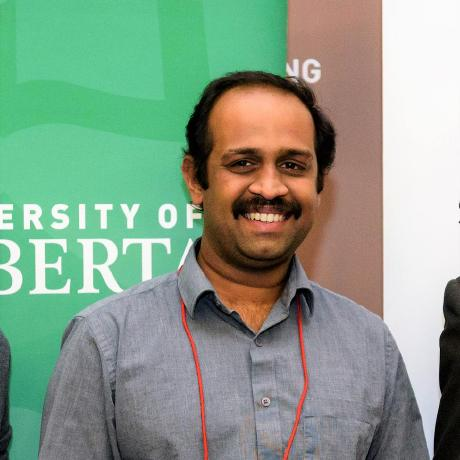

Keynote Speakers

Dr. Laura Brattain
Associate Professor, University of Central Florida, USA
Dr. Brattain integrates biomedical artificial intelligence, medical ultrasound, and surgical robotics to advance real-time, intelligent systems for clinical care. Her work focuses on ultrasound-guided interventions, cloud-to-edge AI integration, and the development of diagnostic assistants that enhance clinical decision support and improve minimally invasive procedures.

Dr. Abhilash Hareendranathan
Assistant Professor, University of Alberta, Canada
Dr. Hareendranathan applies advanced artificial intelligence techniques to medical imaging, particularly ultrasound, to improve diagnostic accuracy, reliability, and clinical efficiency. His research focuses on automatic biomarker discovery, robust image analysis, and workflow optimization, enabling reliable image interpretation and decision-making even by minimally trained operators.